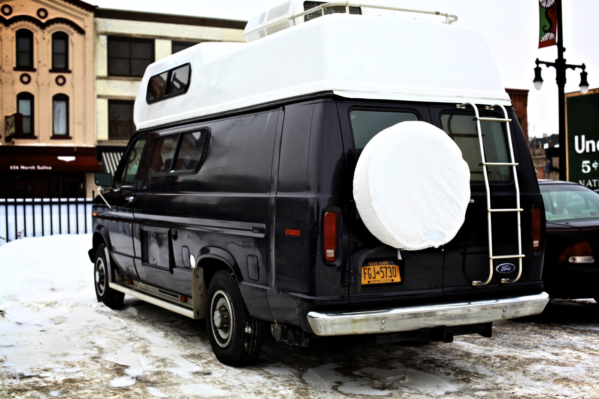
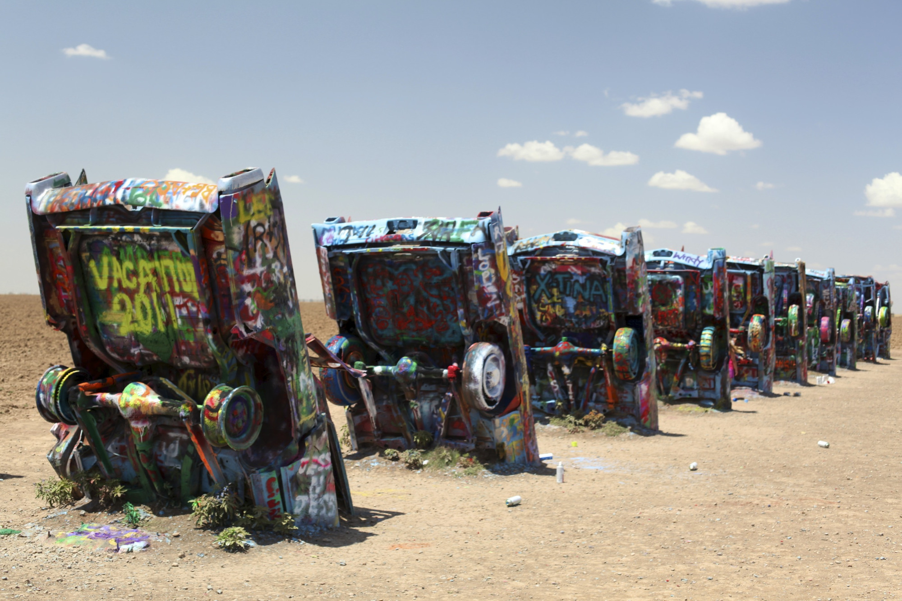
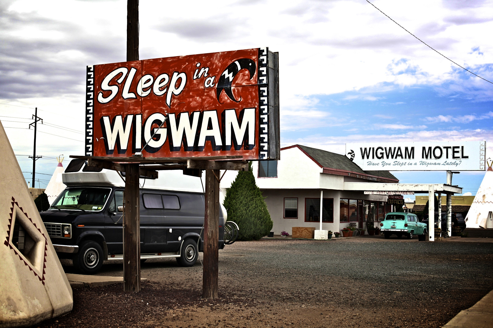
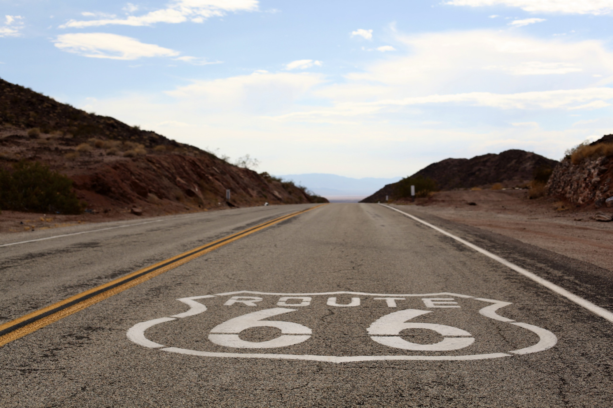

USA Roadtrip!
Hi my name is Bonnie Bright and this page is about a year long roadtrip I took around the US in 2011. The trip started in New York and I ended up in Portland. I am going to cover several of the highlights of the trip.
Roadtrip prep
Before taking off on the roadtrip, I sold 90% of my belongings and purchased a RV van. I named it Harvey the RV. Here is a picture of Harvey, in my old home of Syracuse, NY:
First stop, space shuttle launch!
After departing New York, I headed to Flordia to see the space shuttle launch, STS-133. It was a clear day and the launch was the last space shuttle launch that was on a clear day. Here is a picture of the launch:

Canoeing with Aligators at Silver Lake
Went canoeing on Silver Lake in Flordia where the waters have lots of aligators. In the 1930s, Rhesus monkies were released by a tour boat operator. They are not native to the area but have reproduced and there are lots of them present.

Route 66
After several months hopping around the east coast, I decided to take Route 66 from Chicago to LA! Rt. 66 was established on November 11, 1926 and was one of original highways in the US. A lot of the route, is no longer marked by signs so you have to get a guide book to be able to follow the original route. Here are a few pictures from Route 66:
  